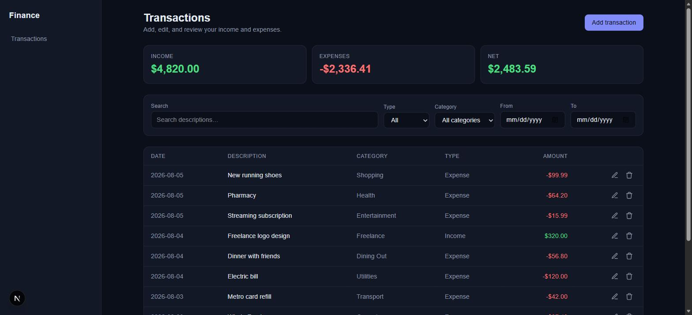

Featured Project
Personal Finance Dashboard
Built a production-style full-stack personal finance application with transaction management, dashboard analytics, monthly budgets, PostgreSQL, Prisma, Server Actions, automated testing, Playwright end-to-end testing, accessibility, and GitHub Actions CI.
View on GitHub →